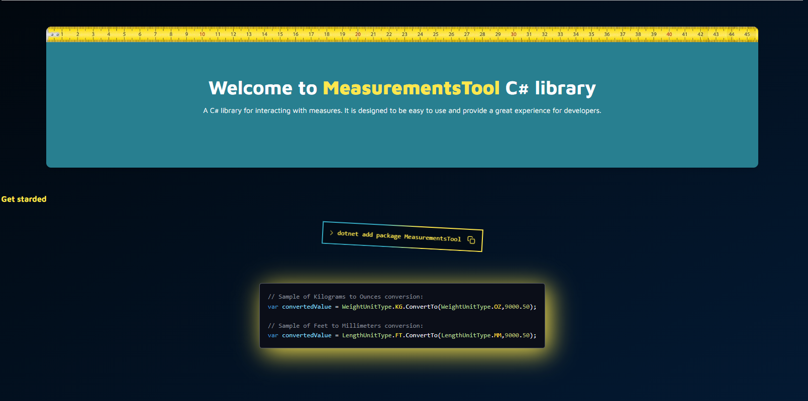

MeasurementsTool - Easy to use measurement units conversion library for C#
- C#
- GitHub
- Tailwind CSS
Librería que facilita la conversión de unidades de medida. Este proyecto es una práctica que me ha permitido aprender sobre despliegue con GitHub Actions, Codecov, Astro y paquetes NuGet, sino que también ofrece una herramienta práctica para desarrolladores. ¡Sigue leyendo para descubrir cómo puede ayudarte en tus proyectos!